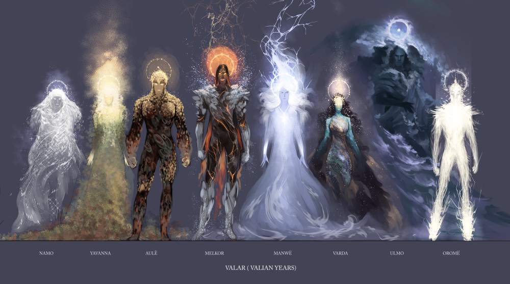

The Third Age
The Ainulindalë
The beginning of the Lord of the Rings universe was written about in the chapter Ainulindalë of The Silmarillion. In the beginning, there was nothing, save for Eru Ilúvatar. Then, Ilúvatar made the Ainur, living beings who accompanied him. After creating these holy beings, Ilúvatar taught them the art of music, and they sang before them a great song, each contributing their own ideas and harmonies.
However, as they kept singing, Melkor, the most powerful of the Ainur, started to spread clashing ideas and melodies. These clashing melodies started to spread to other Ainur, and soon the song fell into chaos. Then, Ilúvatar raised his hand and started a new theme, growing in power and fighting against the discord of Melkor. However, Melkor’s loud and violent theme soon overpowered the song again, and so, Ilúvatar wove in a new theme. The theme “seemed at first soft and sweet; but could not be quenched, and took to itself power and profundity.” The themes of Melkor and Ilúvatar clashed more and more until Ilúvatar rose one last time and stopped the music.
Ilúvatar told Melkor and the rest of the Ainur that it was pointless to try to go against his will and take control for themselves, saying, “No theme may be played that hath not its utmost source in me.” Ilúvatar then showed the Ainur a vision of a world created by their music. But before they could make sense of what was being shown to them, Ilúvatar took the vision away. Ilúvatar then brought them far into the empty Void and created Eä, the universe, and Arda, the world inside of it.
The Ainur were allowed to enter into this world, but once they entered, they would not be allowed to leave until the universe ended. Despite this, many Ainur entered into the world. The greatest among these Ainur became the Valar, and the lesser among them became the Maiar.
The Marring of Arda
The Valar and Maiar began shaping Arda according to their vision. However, Melkor, who had also entered the world, thought to take control of Arda for himself. Melkor fought against the Valar, nearly defeating them. However, Tulkas the Strong, another Vala, joined the rest of the Valar in the fight and turned the tide. Melkor, defeated, ran from Arda and hid.
With Melkor gone, the Valar were free to continue to shape the world. First, Yavanna, the Vala of nature, planted the first seeds. However, the seeds could not grow as the world was completely dark, and so the Valar Aulë, Varda, and Manwë created two mighty lamps to provide light to Arda. Now they had enough light, the seeds sprouted, and soon the world was covered with all sorts of plants and animals.
Melkor saw these beautiful things being created by the Valar and grew jealous. In anger, he came out of hiding and destroyed the two lamps, plunging the world into darkness and chaos. In the ensuing fight between Melkor and the Valar, the lands of Arda split into many pieces. To the west, the Land of Aman broke off and began drifting away. To the east, the Land of the Sun broke off and drifted eastwards. The lands that remained in the middle became known as Middle Earth.
The Valar, weary from all the conflict, departed to the Land of Aman, leaving Melkor in charge of Middle Earth. There they established the domain of Valinor. The Valar then planted two trees, named Telperion and Laurelin. Once fully grown, the trees emitted brilliant golden and silver light, illuminating the world once more.
-

Illustration of Eru Ilúvatar. Source (#1)
-

Depiction of the Valar. Source (#2)
-

Tolkien's drawing of Arda during the Years of the Trees. Source (#3)